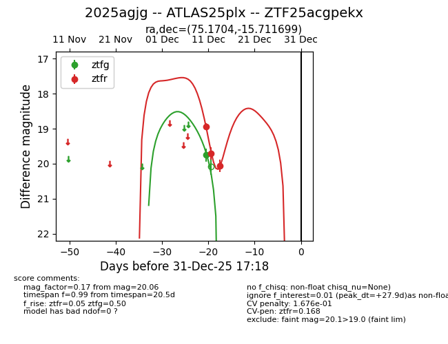
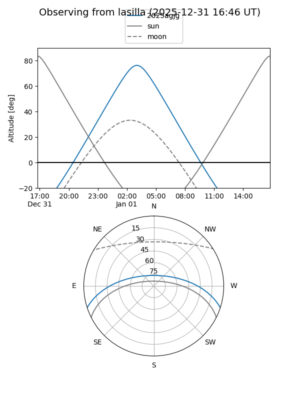
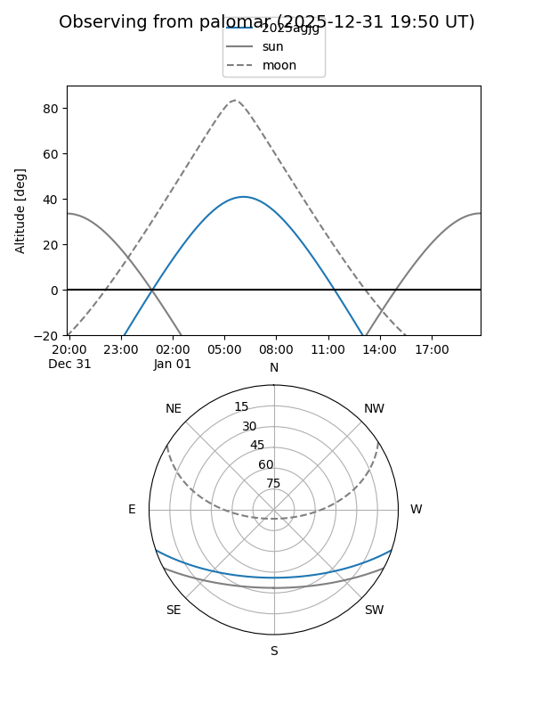
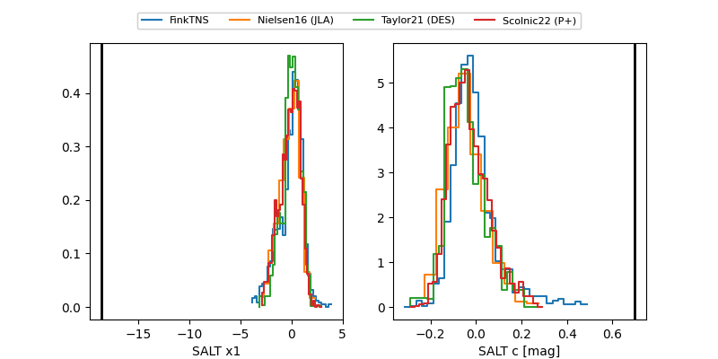

2025agjg
Target 2025agjg at 2025-12-31 18:00
Aliases and brokers:
FINK: link
Lasair: link
ALeRCE: link
TNS: link
YSE: link
alt names
ZTF25acgpekx (ztf,fink_ztf)
2025agjg (tns,yse)
ATLAS25plx (atlas)
Coordinates:
equatorial (ra, dec) = 75.1704,-15.71170
equatorial (HMS+DMS) = 05:00:40.89,-15:42:42.12
galactic (l, b) = (215.4200,-31.43838)
Flags:
likely cv
Photometry:
last ztfg=19.75, ztfr=20.06
1 ztfg, 3 ztfr detections
Lightcurve

Visibility


Additional plots
